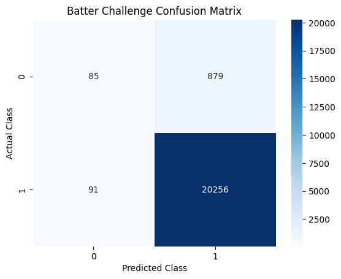
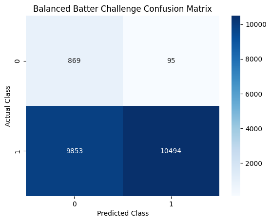

Naive Bayes Overview
Naive Bayes represents a foundational class of supervised, probabilistic classification algorithms grounded in Bayes' Theorem. The core paradigm relies on the "naive" conditional independence assumption that every feature is completely independent of each other given the target class label. By multiplying the independent feature likelihoods alongside the overall class prior probability, the model efficiently computes the joint posterior probability. In machine learning pipelines, different structural variants of the Naive Bayes architecture (listed below) are deployed depending entirely on the mathematical distribution and data types of the independent variables.
Within the scope of this research project, distinct situational features are synthesized into a Unified Hybrid Naive Bayes Pipeline. Because the features are a combination of continuous data (spatial pitch location coordinates, inning), categorical data (count, outs, challenges left), and binary data (booleans indicating bases occupied), a single uniform model would violate the distribution assumptions. This hybrid pipeline was used for four distinct predictive tasks: predicting if a called strike will be challenged by the batter, if a called ball will be challenged by the pitcher/catcher, if a batter’s challenge will be overturned, and if a pitcher/catcher’s challenge will be overturned.
The Mathematical Variants of Naive Bayes
- Gaussian Naive Bayes: Tailored strictly for continuous numeric variables. It assumes that the continuous features associated with each class follow a Gaussian bell curve distribution.
- Multinomial Naive Bayes: Designed for discrete event count variables. It models feature vectors where features represent counts or frequencies of occurrences, such as the number of times a word appears in an email.
- Bernoulli Naive Bayes: Engineered for binary or boolean independent features. It evaluates the simple presence or absence of a specific characteristic.
- Categorical Naive Bayes: Optimized for discrete categorical features with fixed ranges. It assumes each feature has its own categorical distribution.
Data Prep
Supervised machine learning algorithms fundamentally require a fully labeled historical dataset to map patterns and build predictive classifications. In unsupervised learning (such as Clustering and PCA), models identify underlying archetypes without knowing the true results. Supervised learning, however, relies on these pre-established target labels to calculate mathematical feature likelihoods and conditional probabilities. For the Naive Bayes tasks, the data is explicitly structured around two distinct types of labeled outputs:
- Challenge Intent (“Will pitch get challenged?”) Targets: Labeled as "Challenged" (1) or "Not Challenged" (0).
- Challenge Outcome (“Will challenge get overturned?”) Targets: Labeled as "Overturned" (1) or "Confirmed" (0).
To validate the models cleanly and ensure high academic rigor, each dataset is randomly partitioned into a Training Set (80%) and a Testing Set (20%). These subsets must remain completely disjoint to eliminate data leakage. Evaluating a model on the same data used to train it artificially inflates testing accuracy and leaves the model unprepared to predict live pitches.
Multi-Pipeline Feature Segmentation
Unlike standard Naive Bayes scripts that force a single mathematical distribution over mixed parameters, the custom HybridNaiveBayes pipeline programmatically segments features into isolated subsets based on their underlying data properties:
- Continuous Features (GaussianNB): plateTimeX, plateTimeY_topDiff, plateTimeY_BotDiff, startSpeed, inning, netScore
- Discrete Features (CategoricalNB): prePitchBalls, prePitchStrikes, outs, challengesLeft, pitchTypeGroup
- Boolean Features (BernoulliNB): runnerOn1st, runnerOn2nd, runnerOn3rd
Overcoming Severe Class Imbalance
Data exploration revealed a massive structural skew in the challenge intent models, where pitches are recorded as Not Challenged more than 95% of the time. If trained on this split, a uniform classifier falls into a majority-class trap—it simply guesses Not Challenged for every single pitch, yielding a technically high accuracy score but a completely useless 0.00 recall rate for the Challenged class.
To correct for this, the pipeline integrates a specialized threshold-balancing routine. By calculating the explicit mathematical log-odds penalty of the skewed baseline classes, the predict step applies a tunable bias modifier directly to the final boundary line. This balancing protocol shifts the model's focus away from class rarity and toward feature-driven telemetry. This ensures the algorithm catches challengeable gray-zone situations, successfully optimizing the Macro F1-Score when the bias hyperparameter is correctly tuned.
Dataset Links:
- Batter-challengeable Pitches CSV: MLBData-ABSChallengeablePitches-Batters-FullSeason.csv
- Defense-challengeable Pitches CSV: MLBData-ABSChallengeablePitches-Defense-FullSeason.csv


Code
Results
Batter Challenge Intent
The first predictive modeling task evaluates whether the unified hybrid ensemble can accurately predict a hitter's decision to initiate an ABS challenge. Because the baseline dataset contains a heavy class imbalance (81,440 Unchallenged vs. 3,800 Challenged pitches in the training set), this task provides an ideal benchmark to contrast a native empirical probability model against the calibrated log-odds threshold-balancing architecture.
1. The Baseline Empirical Model
When trained naturally on the skewed historical class distributions, the model registers a misleadingly high global testing accuracy of 95.45%. However, an evaluation of the confusion matrix and classification report reveals that this high score is a mathematical illusion caused by the majority class trap.
Because the background rate is so heavily weighted toward a pitch not being challenged, the uncalibrated model defaults to predicting the majority label for almost every single row. Out of 964 actual challenge events in the holdout test set, the empirical model only successfully predicts 85 of them—yielding an un-acceptablely low recall rate of 9% for the active target class.
- Empirical Testing Accuracy: 95.45%
- Class-Specific Recall: Challenged: 0.09 | Not Challenged: 1.00
- Class-Specific Precision: Challenged: 0.48 | Not Challenged: 0.96

2. The Calibrated Threshold-Balancing Model
To force the algorithm to prioritize structural telemetry features (such as spatial deviations and high-leverage ball-strike counts) over the sheer rarity of a challenge, the pipeline was re-executed with log-odds threshold balancing active (use_balancing=True, bias=1.0). By shifting the final decision boundary, the calibrated model completely breaks out of the majority class trap. While the global accuracy score normalizes to 53.32%, the model's ability to flag true events scales exponentially, capturing 869 out of 964 true attempts to reach a recall rate of 0.90 (90%) for the minority class.
- Empirical Testing Accuracy: 53.32%
- Class-Specific Recall: Challenged: 0.90 | Not Challenged: 0.52
- Class-Specific Precision: Challenged: 0.08 | Not Challenged: 0.99

The stark divergence between these two configurations demonstrates that traditional accuracy is an ineffective metric for analyzing situational challenge strategy. By accepting a lower global accuracy, the calibrated hybrid model provides front-office analysts with a highly sensitive alerting tool. It correctly flags 90% of genuine player-initiated challenges, isolating the exact edge-case environments where hitters choose to pull the trigger on a review.